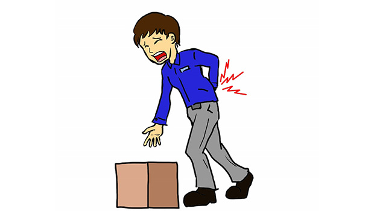
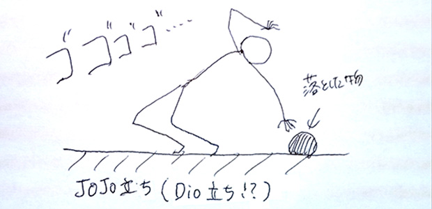

新年早々に…
「腰の激痛に耐えるのは容易ではない、ましてや風邪を引いているならなおさらだ」
ウチのホームページ支配人にこのセリフを言ったところ、「は、はぁ…」と通じていない様子。
アメリカの推理小説家ハリイ・ケメルマンが1947年に発表した短編「九マイルは遠すぎる」を意識したんですが、まあ普通はわかりませんわな。
（この短編小説、ミステリー好きはぜひ読んでみて下さい）
さて、私は新年早々にやらかしてしまいまして。
いわゆるぎっくり腰になってしまったんです。
この痛みは尋常じゃない。
今回はけっこうやっかいで、寝返りをうてないのはもちろんのこと、強く鼻で息を吸うと
‘ピキッッ！’って音がするんじゃないかと思うほど鋭い痛みが走るんですよ。
しかもタイミングが悪いことに風邪気味でして、ハナをすするたびに「ぐあぁッ」と小さく叫んでおります（泣）。
若い人の多くはわからないでしょうね。
私も２０代の頃は「腰が痛いって、どんな感覚なの？」っていう感じでしたもん。
原因は、変な姿勢で安易に重いものを持ち上げたことですね。
昨年末から筋トレをしてきたにもかかわらずふがいない。喝！
忘れていたモノに気づく
それはさておき、ここで一つ気が付いたことが。
ぎっくり腰になった人が必ずそうであるとは限らないのですが、少なくとも私の場合はぎっくり腰になると、直後に太ももが筋肉痛になります。
これは腰をかばって生活するためです。
腰が痛まないようにするためには、上半身を床と垂直になるような姿勢に保たなければなりません。決して前かがみになったりしてはいけない。その瞬間に激痛が走りますから。
下に落ちた物を拾うときなどは背筋をピンと伸ばしてしっかりヒザを曲げて取らなければなりませんね。
もしくは、前傾姿勢の逆でエビ反りになって物を拾うはめになり、こうなるともう‘ジョジョ立ち’にしか見えません（笑）。

そうやって、太ももの筋肉をきちんと使うものですから、自然に筋肉痛になってしまう。
逆の言い方をすると、いかに普段は太ももの筋肉を使わず、腰に負担をかけているかってことです。
ここでふと思いました。
「これって、普段の人間関係に似ていないか」
分かりやすい例で言うと、母親の家事などですかね。
美味いメシが出てくる。衣類を脱げば次の日にはきれいに洗濯物としてたたまれている。
これ、特に学生の方は普通のことのように思えるでしょうが、一人暮らしをすると分かります。それがいかにありがたいことか。
疲れて仕事から帰ってきたとき、流しにたまった洗い物を見るとウンザリしますし、冷蔵庫を開ければ賞味期限切れの肉まんしかない、みたいな（汗）。
（※あ、「早く結婚しろよ」とか無しでお願いします。その話じゃないんで笑）
そういえば、学生の頃に母親に言われたことを思い出しましたよ。
「あんたね、いつもいつも冷蔵庫を開ければ魔法で何でも出てくるわけじゃないのよ！？買って入れている人がいるわけ。そういうことわかってんの？」
たしか、甘いものが食べたくなって冷蔵庫を開けたときに、私が「ったく、ろくなもんが入ってないウチだな！」と、悪態をついたときに言われた言葉です。
ごもっともな返しですよね。
ぎっくり腰になったときの不便さというのは、いつも何か世話を焼いてくれる人がいなくなったときに似ています。
そしていざ自分がやるしかなくなったときのぎこちなさやシブシブ具合は、太ももの筋肉痛に通ずるものがあります。
このときに初めて、負担をかけても受け入れてくれていた腰へのありがたさに気づくわけです。
教訓。皆一度はぎっくり腰になろう！（笑）